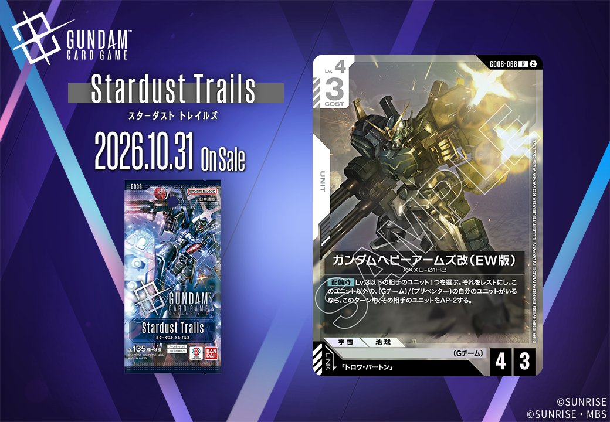

今回は、GD06「Stardust Trails」に収録される白のUNIT2枚をご紹介します。「ガンダムヘビーアームズ改（EW版）」（GD06-068）は「トロワ・バートン」を、「ガンダムサンドロック改（EW版）」（GD06-067）は「カトル・ラバーバ・ウィナー」を、それぞれリンク条件に指定するUNITです。いずれも特定のパイロットを指名するリンク条件を持つ点が共通しており、デッキに組み込む際は対応するPILOTの確保が前提となります。

ガンダムヘビーアームズ改（EW版） (GD06-068)
| 色 | 白 | タイプ | UNIT |
| Lv | 4 | コスト | 3 |
| AP | 4 | HP | 3 |
| 特徴 | 〔Gチーム〕 | ||
| リンク条件 | 「トロワ・バートン」 | ||
効果: 【配備時】Lv.3以下の相手のユニット1つを選ぶ。それをレストにし、このユニット以外の、〔Gチーム〕/〔プリベンター〕の自分のユニットがいるなら、このターン中、その相手のユニットをAP-2する。
コスト3でAP4／HP3という水準に、Lv.3以下の相手ユニット1つをレストにする【配備時】を備えた白のユニットです。さらにこのユニット以外に〔Gチーム〕／〔プリベンター〕の自分のユニットがいればAP-2も加わるため、先に盤面を並べてから配備する順番が重要になります。レスト化は関連カードとの噛み合いも明快で、レストの相手ユニットがいる間《制圧》を得るウイングガンダムゼロ（EW版）の条件付けや、配備したターンにレストの相手ユニットへアタックできるガンダムデスサイズヘル（EW版）の対象確保に繋がります。リンクは「トロワ・バートン」で、同一ユニット上での運用も視野に入ります。

ガンダムサンドロック改（EW版） (GD06-067)
| 色 | 白 | タイプ | UNIT |
| Lv | 5 | コスト | 4 |
| AP | 3 | HP | 5 |
| 特徴 | 〔Gチーム〕 | ||
| リンク条件 | 「カトル・ラバーバ・ウィナー」 | ||
効果: 《ブロッカー》(レストにすることでアタック先をこのユニットにする)【セット時】Lv.4以上のパイロットをセットしたとき、レストのHP3以下の相手のユニット1つを選ぶ。それは次の相手のターンのスタートフェイズでアクティブにならない。
白のLv.5、COST4でAP3/HP5という守りに寄った数値に《ブロッカー》を備えた〔Gチーム〕のユニットです。【セット時】はLv.4以上のパイロットを搭載したときに限り、レストのHP3以下の相手ユニット1つを次の相手のスタートフェイズでアクティブにさせない、実質的な足止めとして働きます。対象がレスト状態に限られるため、条件づくりが鍵となります。リンク先のカトル・ラバーバ・ウィナーは【セット時】にLv.5以下の相手ユニットをレストにでき、ウイングガンダムゼロ（EW版）も【アタック時】にレスト化を行えるため、対象の用意と噛み合います。動けなくした相手は、ガンダムデスサイズヘル（EW版）がレストのユニットをアタック先に選べる点とも接続します。
関連カード
-
 ウイングガンダムゼロ（EW版）(GD05-067)白系デッキ内採用率1.1% (74デッキ)
ウイングガンダムゼロ（EW版）(GD05-067)白系デッキ内採用率1.1% (74デッキ) -
 カトル・ラバーバ・ウィナー(GD05-100)白系デッキ内採用率0.3% (23デッキ)
カトル・ラバーバ・ウィナー(GD05-100)白系デッキ内採用率0.3% (23デッキ) -
 ヒイロ・ユイ(GD05-098)白系デッキ内採用率0.3% (22デッキ)
ヒイロ・ユイ(GD05-098)白系デッキ内採用率0.3% (22デッキ) -
 ガンダムデスサイズヘル（EW版）(GD05-078)白系デッキ内採用率0.1% (7デッキ)
ガンダムデスサイズヘル（EW版）(GD05-078)白系デッキ内採用率0.1% (7デッキ) -
 リーオー(GD05-077)白系デッキ内採用率0.1% (7デッキ)
リーオー(GD05-077)白系デッキ内採用率0.1% (7デッキ) -
 トロワ・バートン(GD05-099)白系デッキ内採用率0% (0デッキ)
トロワ・バートン(GD05-099)白系デッキ内採用率0% (0デッキ)